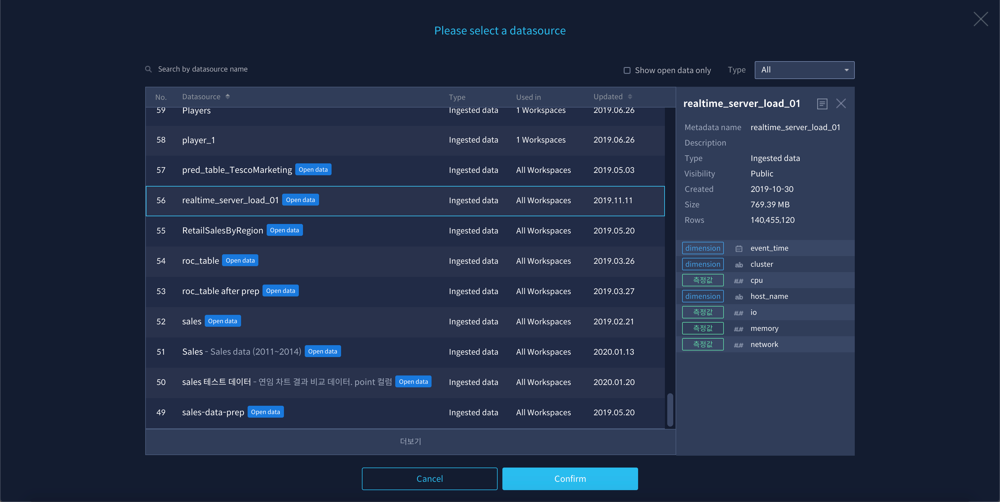
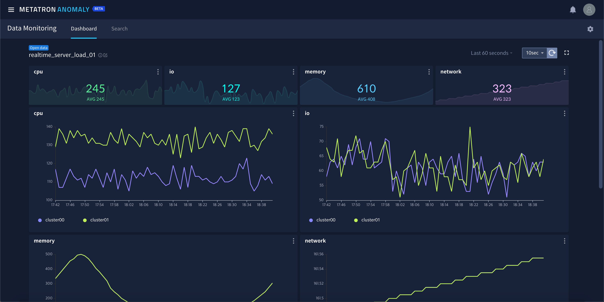

대시보드¶
Metatron Anomaly는 머신러닝 모델을 활용한 이상 탐지 기능과 별도로 데이터 소스 자체에 대한 모니터링 기능을 제공합니다. 알람이 발생한 후에 원인을 찾기 위해서 활용하거나, 어떤 측정값(measure)에 어떤 차원값(dimension)을 대상으로 알람 룰을 생성할지 확인하기 위해서도 활용할 수 있습니다.
그 중 대시보드는 Data Monitoring의 하위 메뉴로, 정해진 차트 몇 가지로 빠르게 데이터 소스에 대한 현황을 파악할 수 있도록 만들어진 기능입니다.

데이터 소스 선정¶
가장 먼저 모니터링할 데이터 소스를 골라야 합니다. 대시보드에 처음으로 진입하면 데이터소스를 선택하는 버튼이 다음과 같이 나타납니다.

버튼을 클릭 후 모니터링할 데이터 소스를 선택합니다.

실시간 대시보드¶
데이터 소스를 선택하면 즉시 주요 측정 값 4개에 대한 차트들로 이루어진 대시보드가 만들어집니다. 이 대시보드는 사용자가 다른 화면으로 이동 후에 다시 돌아오더라도 유지됩니다.

대시보드의 상단에는 데이터소스의 정보를 보여줍니다. 모니터링 하고자 하는 데이터 소스를 변경하려면 데이터 소스 이름 우측의
을 누릅니다.
만약 데이터 소스 선택 후 아무런 차트도 그려지지 않는다면 우측 메뉴에서 모니터링 대상이 되는 기간을 확인하세요. 이 대시보드는 지속적으로 업데이트 되는 데이터 소스를 모니터링한다고 가정하고 있습니다.

상단의
를 누르면 대시보드를 정해진 시간마다 갱신합니다. 기본적으로는 10초마다 업데이트하며 갱신 주기는 20초 또는 30초로 변경할 수 있습니다.

을 누르면 전체화면 모드로 전환됩니다. 전체화면 모드에서 다시

차트¶
대시보드에는 선정된 데이터 소스에서 임의의 측정값(measure) 4개에 대한 11개의 차트가 자동으로 그려집니다.
측정값(measure) KPI 차트 : 개별 측정값 4개에 대해 현재값 및 평균 값에 대한 KPI 차트입니다.

차원값(dimension) 별 측정값 라인 차트 : 임의로 선택된 차원값 1개에 대해 개별 측정값 4개에 대한 라인 차트를 그립니다.

데이터 수집 현황 : 24시간 동안 몇 개의 데이터 레코드가 수집되었는지 기록한 막대 차트입니다.

데이터 수집 지연 시간 : 가장 최근 데이터가 수집된 시간과 현재 시간과의 차이로 수집 지연 시간을 나타낸 차트입니다.

알람 발생 분포 : 해당 데이터 소스로 발생한 알람들을 심각도 별로 나누어 개수를 나타내는 파이 차트입니다.


{kind=link}